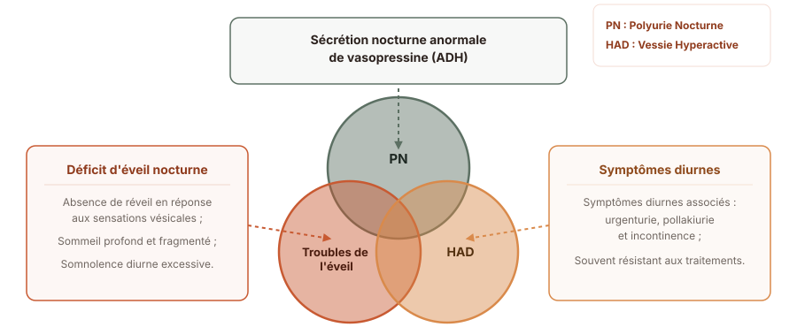
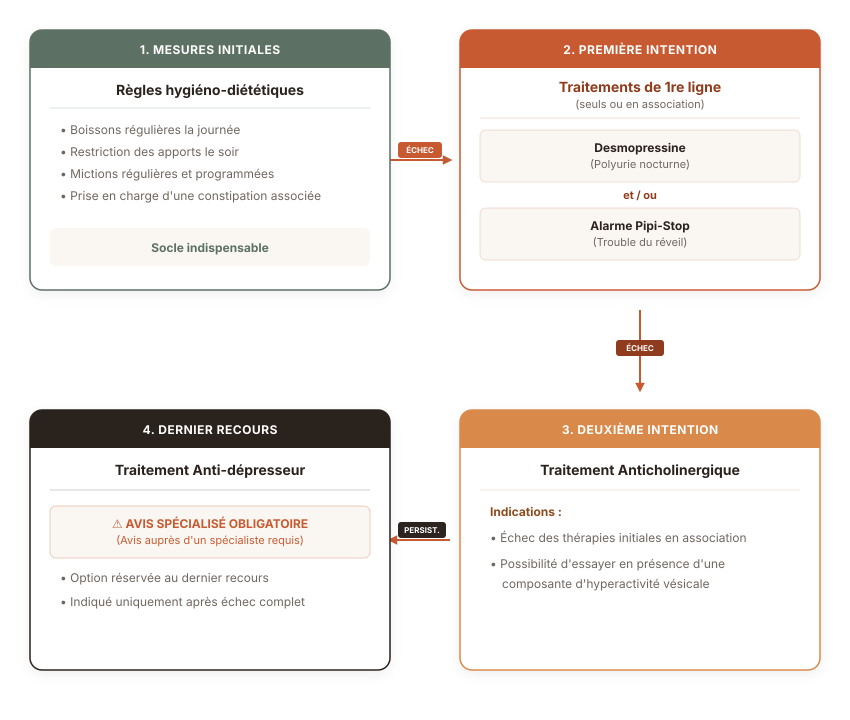

L’énurésie de l’enfant
Cours de DIU de neuro-urologie
Service de MPR pédiatrique — Hôpital Armand Trousseau (Paris) | Sorbonne Université
Les définitions selon l’ICCS
(International Continence Child Society)
L’énurésie
L’énurésie correspond à l’émission passive d’urine sur le temps du sommeil à partir de l’âge de 5 ans et plus.
Il faut différencier les énurésies primaires et secondaires :
- primaire : apparition dès l’enfance sans période sèche prolongée,
- secondaire : apparition après au moins 6 mois consécutifs sans trouble.
L’énurésie
Deux termes sont à différencier : monosymptomatique (MNE) et non-monosymptomatique (NMNE).
Une énurésie non-monosymptomatique est l’émission d’urine au cours du sommeil associée à au moins 1 des symptômes suivants :
- incontinence urinaire diurne,
- urgenturie,
- dysurie,
- anomalie de fréquence des mictions (trop peu <4 ou trop > 7).
Les prises en charge des MNE et NMNE seront différentes.
La capacité vésicale théorique
Des normes sont fixées par l’International Continence Child Society (ICCS) :
La Capacité Vésicale Théorique en mL :
\[ \text{CVT} = (\text{âge} + 1) \times 30 \]
L’âge est exprimé en années.
Cette formule est valide de 3 ans jusqu’à l’âge de 13 ans environ où la capacité vésicale théorique atteint 400 ml environ (capacité vésicale adulte).
La polyurie nocturne
La polyurie nocturne correspond à une production anormale d’urine au cours de la nuit.
La définition actuelle donne un volume uriné au cours de la nuit supérieur ou égal à 130% de la CVT.
La prévalence
C’est un trouble fréquent.
Selon une cohorte finlandaise (>3000 enfants) et une cohorte australienne (> 2000 enfants), l’énurésie concerne :
- 5 à 10 % des enfants de 7 ans,
- 3 % des enfants de 11 à 14 ans,
- 0,5 à 1% des adultes restent énurétiques.
Sources : (Järvelin et al., 1988), (Bower et al., 1996).
La physiopathologie
Plusieurs hypothèses existent :
- l’hérédité familiale,
- le sommeil perturbé,
- la production d’urine majorée,
- l’hyperactivité détrusorienne,
- les causes psychologiques,
- le dysfonctionnement du système nerveux central.
La physiopathologie de l’énurésie est assurément multifactorielle.
La physiopathologie

Sources : (Nevéus, 2009), (Sinha and Raut, 2016).
Les troubles du sommeil : cause ou conséquence ?
Source : (Van Herzeele et al., 2016).
La prise en charge diagnostique
Éliminer les diagnostics différentiels
Les principaux troubles associés à identifier pour le diagnostic étiologique sont :
- les troubles psychiatriques
- la constipation
- les infections urinaires
- les ronflements ou apnée du sommeil.
S’il s’agit d’un tableau d’énurésie primaire isolée : aucun examen biologique, radiologique ou urodynamique n’est nécessaire.
Prendre en charge les troubles associés
- Les troubles psychiatriques : rarement la seule cause mais indispensable à prendre en charge
- L’énurésie peut avoir des conséquences psychiatriques et psychologiques : sur l’estime de soi par exemple
Source : (Gontard and Equit, 2015).
- La constipation : très fréquente pour les enfants atteints de NMNE et MNE
Sources : (Loening-Baucke, 1997), (Söderstrom et al., 2004).
- Une infection urinaire
- Les troubles respiratoires nocturnes : 50% des enfants avec énurésies et troubles respiratoires nocturnes deviendront secs après ablation des amygdales et végétations
Prendre en charge les troubles associés
Tableau — Signes d’alerte lors de l’évaluation initiale d’un enfant énurétique
| Signe d’alerte | Conduite à tenir |
|---|---|
| Perte de poids, retard de croissance et/ou nausées | Contrôle de la créatininémie et de la glucosurie. Examen physique. |
| Soif excessive avec besoin de boire la nuit (polydipsie) | Contrôle de la glucosurie. Calendrier mictionnel / apports hydriques. Envisager créatininémie et osmolalité urinaire du matin. Examen physique. |
| Difficultés mictionnelles (jet faible, besoin de pousser) |
Débitmétrie urinaire et mesure du résidu post-mictionnel. Examen physique. |
| Énurésie nocturne secondaire (apparition récente) |
Contrôle de la glucosurie. Examen physique. |
| Ronflements importants ou apnées du sommeil | Avis ORL (oto-rhino-laryngologiste). Examen physique. |
Le bilan minimal nécessaire
L’interrogatoire
- identifier MNE et NMNE
- enquêter sur l’histoire familiale
- évaluer les troubles urinaires diurnes
- éliminer un diabète
- repérer des troubles du transit : constipation +++
- dépister des troubles du sommeil, et respiratoires
- repérer des troubles du comportement ou des intéractions sociales : violences …
- lister les traitements déjà testés pour ces symptômes
L’examen clinique
Les principaux éléments à rechercher sont :
- à l’examen neurologique : déficit musculaires ou asymétrie
- malformations des organes génitaux externes
- signe de dysraphisme sur le raphée médian
Calendrier mictionnel
Pour :
- Évaluer la capacité vésicale par rapport à la capacité vésicale théorique
- Vérifier l’absence de trouble urinaire diurne
- Évaluer les volumes urinés au cours de la nuit : recherche de polyurie nocturne.
Et rien d’autre dans le cadre d’une énurésie monosymptomatique primaire.
La prise en charge thérapeutique

Les règles hygiéno-diététiques
Il est nécessaire d’informer de manière systématique :
- sur le taux de guérison spontanée sur les cohortes d’enfants énurétiques est de 15% tous les ans → réassurance,
- sur l’importance de la répartition des boissons dans la journée,
- sur la nécessité de réaliser une miction systématique au lever et au coucher,
- sur l’importance d’arrêter le port des couches, surtout si une amélioration se produit.
La prescription de la desmopressine
C’est un analogue de l’hormone anti-diurétique.
L’autorisation de mise sur le marché (AMM) précise :
- L’indication : énurésie à partir de l’âge de 6 ans,
- La posologie : débuter à 60 µg, puis augmenter de 60 µg / semaine jusqu’à 360 µg si nécessaire,
- si inefficace : arrêt du traitement après 4 semaines à dose maximale,
- si efficace : rester à la dose minimale efficace pour un traitement de 3 mois, renouvelable si besoin.
La prescription de la desmopressine
Les précautions d’emploi sont :
- d’éliminer une pathologie rénale associée,
- d’informer sur le risque d’hyponatrémie :
- minime en pédiatrie.
Il est recommandé d’arrêter de boire 1h avant la prise et pendant 8h après.
Les recommandations sont de :
- privilégier la voie orale à nasale (meilleure disponibilité),
- trouver la dose minimale efficace.
Les anticholinergiques autorisés
Trois spécialités ont l’AMM en pédiatrie. Leur prescription nécessite de vérifier le résidu post-mictionnel (RPM) tous les 3 à 6 mois par échographie ou bladder-scan.
Oxybutynine :
- Autorisé à partir de 5 ans,
- A une dose de 0,3 à 0,4 mg/kg/jour en 2 à 3 prises,
- Disponible en comprimé de 5 mg ou en suspension buvable sur autorisation temporaire d’utilisation (ATU),
- Sa demi-vie est courte < 1,5 heure, et nécessite plusieurs prises par jour,
- Les effets secondaires principaux sont l’imprégnation atropinique et le passage de la barrière hémato-encéphalique (BHE).
Sources : (Blais et al., 2016).
Les anticholinergiques autorisés
Chlorure de trospium :
- Autorisé à partir de 12 ans,
- Disponible en comprimé de 20 mg à raison de 2x / jour, sans adaptation au poids,
- Sa demi-vie est plus longue : 6 heures,
- Les effets secondaires principaux sont l’imprégnation atropinique (passage de la BHE limité).
Solifénacine :
- Autorisé à partir de 2 ans,
- Disponible en sirop de 1 mg/ml ou en comprimé de 5 ou 10 mg,
- Le sirop n’est pas remboursé par la sécurité sociale suite à la synthèse de l’HAS (ANSMR V).
Mirabegron :
- Non autorisé en France
- Les études internationales décrivent une bonne tolérance
Les antidépresseurs tricycliques : en dernier recours
L’autorisation de mise sur le marché (AMM) précise :
- une indication dans le cadre d’une énurésie à partir de 6 ans
- une posologie de 10 à 50 mg au coucher ou 1 à 2,5mg/kg (doses inférieures à celles prescrites dans le syndrome dépressif),
Des précautions sont nécessaires avant la mise en place du traitement :
- Réaliser un ECG : risque de cardiotoxicité,
- Réaliser un bilan sanguin avec bilan hépatique : risque d’hépatotoxicité,
Les effets indésirables principaux sont :
- L’effet anti-cholinergique,
- Des troubles de l’humeur lors d’un arrêt brutal,
En pratique, ce traitement est peu ou pas utilisé.
(Glazener and Evans, 2000) ont montré qu’une prise quotidienne permettait de diminuer la fréquence de l’énurésie d’1 nuit / semaine.
Bibliographie

Dr Pauline Lallemant-Dudek — L’énurésie - Les particularités en pédiatrie